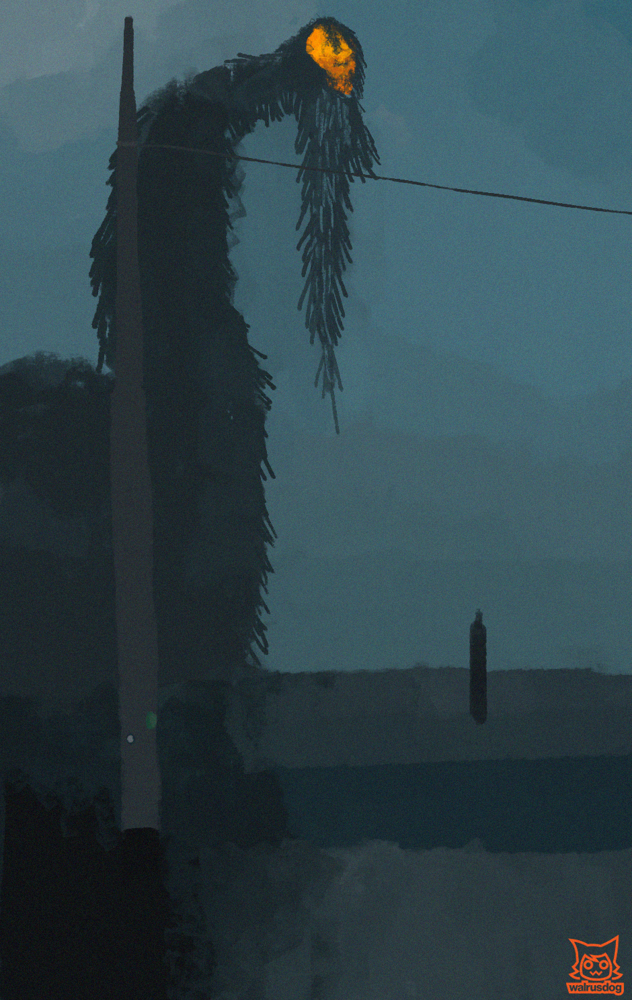

numinous
numinous was our college final project I was the lead of this project and did a substantial amount of work on it.
art:
Roughly 95% of the textures in the game were made by me. each level, desk, computer, wall decal, ect were mine. each texture was painted in Fire Alpaca and added in Bledner and Unity. i also created some rough concept art that was never used
3D modeling:
I made roughly 85% of the 3d models in the game including the levels. every object (including the entire map) on the first level was made by me. as well as the train, shadow man, and others on the second level.

documentation:
i wrote and organized 3 different game documents for this project as was required by the curriculum. the main Game Design Document, and Art Document and a Programming Document.
programming:
i created the entire player controller script. this included movement, jumping, crouching, slope checking, and teleporting. it also included functionality for ladders and a flying mode that did not make it into the game.
sound:
roughly 98% of the sounds used as sound effects were recorded by me. while I did not edit the sounds, the audio engineer and I recorded them all together.